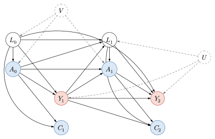

Tutorial: Bayesian g-formula with Turing.jl
This tutorial combines Dosearch.jl with Turing.jl in a Bayesian causal inference workflow:
- Write a model of a follow-up study in DynamicPPL, with unmeasured confounding, and simulate data from it.
- Identify a causal effect nonparametrically with Dosearch.jl, with loss to follow-up encoded in three ways, and find how much unmeasured confounding the identification tolerates.
- Fit the model to the data, predict the outcomes under each intervention with the posterior, and compute the effect from the predictions.
using Dosearch, Turing, Enzyme, Random, StatisticsA follow-up study
Patients visit a clinic at times $k = 0, 1, \ldots, K - 1$. At visit $k$, we measure their severity $L_k$ and decide on their treatment $A_k$. Before the next visit, a patient may be lost to follow-up ($C_{k+1} = 1$), and otherwise we learn whether they died ($Y_{k+1} = 1$). Nothing is observed after loss to follow-up or death, and death is absorbing.
Severity confounds treatment at every visit, and severity is itself affected by earlier treatment. Two causes are not measured: the patient's access to care $V$ affects their severity at baseline and every treatment decision, and their frailty $U$ affects their later severity and death. Loss to follow-up depends only on the measured past.
Every variable has a logistic model in its past, with coefficients shared over time, and the unmeasured causes are standard normal. The loadings $\lambda \geq 0$ fix the direction of $U$ and $V$. The same model generates the data and is fitted to them. It creates its variables itself, and data enter it only by conditioning. The argument intervention is a rule that sets treatment from the history of severity, and it prevents loss to follow-up. Without it, treatment and loss to follow-up follow their models.
@model function followup(N, K; intervention = nothing)
# column k + 1 of L and A is visit k, column k of C and Y the interval
# that ends at visit k
L, A, C, Y = (Matrix{Bool}(undef, N, K) for _ in 1:4)
α ~ Normal(0, 1.5) # severity L₀
θL ~ filldist(Normal(0, 1.5), 3) # severity Lₖ: 1, Lₖ₋₁, Aₖ₋₁
θA ~ filldist(Normal(0, 1.5), 3) # treatment Aₖ: 1, Lₖ, Aₖ₋₁
θC ~ filldist(Normal(0, 1.5), 3) # loss Cₖ₊₁: 1, Lₖ, Aₖ
θY ~ filldist(Normal(0, 1.5), 4) # death Yₖ₊₁: 1, L₀, Lₖ, Aₖ
λ ~ filldist(truncated(Normal(0, 1); lower = 0), 4) # V → L₀, V → A, U → L, U → Y
U ~ filldist(Normal(), N) # frailty
V ~ filldist(Normal(), N) # access to care
for i in 1:N
for k in 1:K # visit k - 1 and the interval after it
if k == 1
L[i, k] ~ BernoulliLogit(α + λ[1] * V[i])
else
L[i, k] ~ BernoulliLogit(θL[1] + θL[2] * L[i, k - 1] + θL[3] * A[i, k - 1] + λ[3] * U[i])
end
if intervention === nothing
previous = k == 1 ? false : A[i, k - 1]
A[i, k] ~ BernoulliLogit(θA[1] + θA[2] * L[i, k] + θA[3] * previous + λ[2] * V[i])
C[i, k] ~ BernoulliLogit(θC[1] + θC[2] * L[i, k] + θC[3] * A[i, k])
else
A[i, k] = intervention(L[i, 1:k])
C[i, k] = false
end
C[i, k] && break # lost: nothing more is observed
Y[i, k] ~ BernoulliLogit(θY[1] + θY[2] * L[i, 1] + θY[3] * L[i, k] + θY[4] * A[i, k] + λ[4] * U[i])
Y[i, k] && break # dead
end
end
endTo simulate a study, we set the parameters to their true values with fix and draw from the model. We keep what is observed: L, A, C and Y, with missing for what was not measured.
true_parameters = (α = -0.4, θL = [-1.0, 1.5, -1.0], θA = [-0.5, 1.0, 1.0],
θC = [-2.5, 0.5, 0.3], θY = [-2.0, 0.8, 1.0, -1.0], λ = [0.8, 1.0, 1.0, 1.0])
value(draw, vn) = haskey(draw, vn) ? draw[vn] : missing
observations(draw, N, K) = (L = [value(draw, @varname(L[i, k])) for i in 1:N, k in 1:K],
A = [value(draw, @varname(A[i, k])) for i in 1:N, k in 1:K],
C = [value(draw, @varname(C[i, k])) for i in 1:N, k in 1:K],
Y = [value(draw, @varname(Y[i, k])) for i in 1:N, k in 1:K])
N, K = 1000, 2
data = observations(rand(Xoshiro(1), fix(followup(N, K), true_parameters)), N, K)
(lost = count(isequal(true), data.C), died = count(isequal(true), data.Y))(lost = 192, died = 296)Identification
We want the risk of death by the end of follow-up if every patient were treated at every visit, compared with nobody being treated, and nobody were lost to follow-up: $P(Y_2 = 1 \mid \mathrm{do}(A_0 = a, A_1 = a, C_1 = 0, C_2 = 0))$ for $a = 1$ and $a = 0$. As in Robins' approach to censoring, loss to follow-up is intervened on like a treatment.
Without knowing the true model, we can still defend its causal graph: which variables may affect which. Here it has an edge for every variable in the model of another one, and the unmeasured causes $U$ and $V$. Since only survivors are measured, death also points to everything measured after it. Loss to follow-up $C_k$ depends only on the measured past, and it points to nothing: it hides the later variables but does not change them.

We give Dosearch.jl the measured part of the graph, and add the unmeasured causes as candidates, LatentCauses of the variables they affect. The data are what we know: the baseline and the first loss to follow-up for every patient, and then each interval among the patients followed in it.
causal_graph = """
L₀ -> A₀
L₀ -> Y₁
A₀ -> Y₁
L₀ -> L₁
A₀ -> L₁
Y₁ -> L₁
A₀ -> A₁
L₁ -> A₁
Y₁ -> A₁
L₀ -> Y₂
L₁ -> Y₂
A₁ -> Y₂
Y₁ -> Y₂
"""
censoring = """
L₀ -> C₁
A₀ -> C₁
Y₁ -> C₂
L₁ -> C₂
A₁ -> C₂
"""
inputs = """
p(L₀, A₀, C₁)
p(Y₁, L₁, A₁, C₂ | L₀, A₀, C₁)
p(Y₂ | L₀, A₀, C₁, Y₁, L₁, A₁, C₂)
"""
problem = DosearchProblem(inputs, "p(Y₂ | do(A₀, A₁, C₁, C₂))", causal_graph * censoring)
unmeasured = [LatentCause("L₀", "A₀", "A₁"), LatentCause("L₁", "Y₁", "Y₂")]
r = dosearch(with_candidates(problem, unmeasured))\sum_{Y₁,L₁,L₀}\left(p(L₀)\left(p(Y₁,L₁|A₀,C₁,L₀)p(Y₂|A₀,Y₁,L₁,A₁,C₁,C₂,L₀)\right)\right)The effect is identifiable despite $U$ and $V$, by the g-formula
\[\begin{aligned} &P(y_2 \mid \mathrm{do}(a_0, a_1, C_1 = 0, C_2 = 0)) \\ &\quad = \sum_{l_0, y_1, l_1} P(l_0)\, P(y_1, l_1 \mid l_0, a_0, C_1 = 0)\, P(y_2 \mid l_0, a_0, C_1 = 0, y_1, l_1, a_1, C_2 = 0). \end{aligned}\]
The appendix derives it step by step.
The inputs claim more than we know. Conditioning on $C_1$ means that Dosearch.jl takes $P(Y_1, L_1, A_1, C_2 \mid L_0, A_0, C_1)$ as known for both values of $C_1$, but we know it only for the patients still followed, with $C_1 = 0$. An input of a DAG cannot fix a variable to a value, so this is the closest we can write. The formula is still valid, because it uses the inputs only where we know them: it conditions on $C_1$ and $C_2$ at their intervened values, 0, and never sums over them. A formula that summed over $C_1$ would use the outcomes of patients after they were lost, so formulas from this encoding need that check. The other encodings below state exactly what we know, and give the same formula.
Each factor is estimated from the patients followed at that time: $P(l_0)$ from all patients, the second factor from those followed in the first interval, and the last from those followed in both. A complete-case analysis, which estimates every factor from the patients followed to the end, would be biased, since loss to follow-up depends on severity and treatment.
Nothing is measured after death. For a patient who died in the first interval, we set $L_1$, $A_1$ and $C_2$ to 0, and $Y_2 = 1$: $Y_k$ is death by visit $k$. Then no patient who died has $A_1 = 1$, and the last factor is not estimable for them: positivity fails. It is 1, since death is absorbing, but Dosearch.jl does not know this: it is a fact about the outcome, not about the graph. With the hazards of death $h_1 = P(Y_1 = 1 \mid l_0, a_0, C_1 = 0)$ and $h_2 = P(Y_2 = 1 \mid l_0, a_0, C_1 = 0, Y_1 = 0, l_1, a_1, C_2 = 0)$, which are estimable, the risk is
\[\begin{aligned} &P(Y_2 = 1 \mid \mathrm{do}(a_0, a_1, C_1 = 0, C_2 = 0)) \\ &\quad = \sum_{l_0} P(l_0) \Big(h_1 + (1 - h_1) \sum_{l_1} P(l_1 \mid l_0, a_0, C_1 = 0, Y_1 = 0)\, h_2\Big). \end{aligned}\]
Sequential exchangeability
Two steps of the derivation use rule 2, one per visit: $(Y_1, L_1, Y_2 \perp\!\!\!\perp A_0, C_1 \mid L_0, A_1, C_2)$ in the graph without the edges out of $A_0$ and $C_1$ and into $A_1$ and $C_2$, and $(Y_2 \perp\!\!\!\perp A_1, C_2 \mid L_0, A_0, C_1, Y_1, L_1)$ in the graph without the edges out of $A_1$ and $C_2$. These are sequential exchangeability for treatment and censoring, in graphical form: at each visit, treatment and staying in follow-up are independent of the future given the measured past, with the later treatment and censoring set by the intervention.
So one search for the joint intervention checks every visit. A search per visit would ask about one treatment at a time, with the others left as they are, and that is a different question. Here access to care $V$ affects both treatments, so the effect of $A_0$ alone is not identifiable, although the joint effect is:
first_alone = DosearchProblem(inputs, "p(Y₂ | do(A₀, C₁, C₂))", causal_graph * censoring)
dosearch(with_candidates(first_alone, unmeasured))The query p(Y₂ | do(A₀, C₁, C₂)) is not identifiable by do-search.Other encodings
Pearl's school describes the same data with selection nodes or with missingness indicators instead of interventions on loss to follow-up. Dosearch.jl supports both, and they give the same formula. So does an LDAG, which can fix variables to values in the inputs.
A selection node $S_k = 1 - C_k$ is 1 for the patients followed in interval $k$. A distribution that conditions on a selection node is known only among the selected, which is what we know. The query no longer intervenes on loss to follow-up:
selection_inputs = """
p(L₀, A₀)
p(Y₁, L₁, A₁ | L₀, A₀, S₁)
p(Y₂ | L₀, A₀, S₁, Y₁, L₁, A₁, S₂)
"""
selection_graph = causal_graph * """
L₀ -> S₁
A₀ -> S₁
Y₁ -> S₂
L₁ -> S₂
A₁ -> S₂
"""
selection = DosearchProblem(selection_inputs, "p(Y₂ | do(A₀, A₁))", selection_graph;
selection_bias = "S₁, S₂")
dosearch(with_candidates(selection, unmeasured))\sum_{Y₁,L₁,L₀}\left(p(L₀)\left(p(Y₁,L₁|A₀,L₀,S₁)p(Y₂|A₀,Y₁,L₁,A₁,L₀,S₁,S₂)\right)\right)With missingness indicators, each variable that may be missing has a response indicator, 1 if the variable is observed, and a proxy, which is the variable where it is observed and missing otherwise: $R_{Y_1}$ and $Y_1^*$ for $Y_1$, and so on. The data are the distribution of the proxies and the indicators, which is what we observe. The indicators of $Y_1$, $L_1$ and $A_1$ are equal, which a graph cannot express, so the graph lets the last two depend on the first. This search takes about a minute.
missingness_graph = causal_graph * """
L₀ -> R_Y₁
A₀ -> R_Y₁
R_Y₁ -> R_L₁
R_Y₁ -> R_A₁
R_Y₁ -> R_Y₂
Y₁ -> R_Y₂
L₁ -> R_Y₂
A₁ -> R_Y₂
"""
missingness = DosearchProblem("p(L₀, A₀, Y₁*, L₁*, A₁*, Y₂*, R_Y₁, R_L₁, R_A₁, R_Y₂)",
"p(Y₂ | do(A₀, A₁))", missingness_graph;
missing_data = "R_Y₁ : Y₁, R_L₁ : L₁, R_A₁ : A₁, R_Y₂ : Y₂")
r_missingness = dosearch(with_candidates(missingness, unmeasured))\sum_{Y₁,L₁,L₀}\left(\left(p(L₀)p(Y₁*,L₁*|R_Y₁,R_L₁,A₀,L₀)\right)p(Y₂|Y₁,R_Y₁ = 1,L₁,R_L₁ = 1,A₁,R_A₁ = 1,R_Y₂ = 1,A₀,L₀)\right)Both are the g-formula above, with selection or observation ($S = 1$ or $R = 1$) in place of the intervention $C = 0$. Writing $R = 1$ for all four response indicators being 1:
\[\begin{aligned} &P(y_2 \mid \mathrm{do}(a_0, a_1)) \\ &\quad = \sum_{l_0, y_1, l_1} P(l_0)\, P(y_1, l_1 \mid l_0, a_0, S_1 = 1)\, P(y_2 \mid l_0, a_0, y_1, l_1, a_1, S_1 = S_2 = 1) \\ &\quad = \sum_{l_0, y_1, l_1} P(l_0)\, P(y_1^*, l_1^* \mid l_0, a_0, R_{Y_1} = R_{L_1} = 1)\, P(y_2 \mid l_0, a_0, y_1, l_1, a_1, R = 1). \end{aligned}\]
The notation of the R package, which the formula follows, leaves $R_{Y_1} = R_{L_1} = 1$ implicit in the second factor; the derivation writes it out. The derivations also show how the encodings meet. Before either uses the data, a step by rule 3 intervenes on the selection nodes or on the response indicators, which is valid because these affect none of the other variables. So the Pearl-style derivations intervene on loss to follow-up too. The appendix shows the derivation with missingness indicators.
Finally, a labeled DAG can say literally that the inputs are known for $C_1 = 0$ and $C_2 = 0$, since its distributions can fix variables to values. Interventions are explicit nodes such as $I_{A_0}$: the edges into an intervened variable vanish when its intervention node is 1. The unmeasured causes are explicit latent nodes, and the query sets $C_1 = C_2 = 0$ with their intervention nodes.
ldag_graph = """
I_A₀ -> A₀
I_A₁ -> A₁
I_C₁ -> C₁
I_C₂ -> C₂
V -> L₀
V -> A₀ : I_A₀ = 1
L₀ -> A₀ : I_A₀ = 1
L₀ -> C₁ : I_C₁ = 1
A₀ -> C₁ : I_C₁ = 1
U -> Y₁
L₀ -> Y₁
A₀ -> Y₁
U -> L₁
L₀ -> L₁
A₀ -> L₁
Y₁ -> L₁
V -> A₁ : I_A₁ = 1
A₀ -> A₁ : I_A₁ = 1
L₁ -> A₁ : I_A₁ = 1
Y₁ -> A₁ : I_A₁ = 1
Y₁ -> C₂ : I_C₂ = 1
L₁ -> C₂ : I_C₂ = 1
A₁ -> C₂ : I_C₂ = 1
U -> Y₂
L₀ -> Y₂
L₁ -> Y₂
A₁ -> Y₂
Y₁ -> Y₂
"""
ldag_inputs = """
p(L₀, A₀, C₁)
p(Y₁, L₁, A₁, C₂ | L₀, A₀, C₁ = 0)
p(Y₂ | L₀, A₀, C₁ = 0, Y₁, L₁, A₁, C₂ = 0)
"""
ldag_query = "p(Y₂ | A₀, A₁, C₁ = 0, C₂ = 0, I_A₀ = 1, I_A₁ = 1, I_C₁ = 1, I_C₂ = 1)"
dosearch(DosearchProblem(ldag_inputs, ldag_query, ldag_graph))\sum_{L₀,Y₁,L₁}\left(p(L₀)\left(p(Y₁,L₁|A₀,C₁ = 0,L₀)p(Y₂|A₀,A₁,C₁ = 0,C₂ = 0,L₀,Y₁,L₁)\right)\right)This is the g-formula exactly as written above.
Unmeasured confounding
How much unmeasured confounding could there be? The maximal identifiable graphs answer this: every maximal set of pairs of variables that can have an unmeasured common cause while the effect stays identifiable. We search with selection nodes, where Dosearch.jl uses the data only among the patients followed, so every set it finds is identifiable from what we know. We assume that loss to follow-up shares no unmeasured cause with the other variables, so the candidates are the pairs of the other variables.
selected = ("S₁", "S₂")
candidates = [c for c in confounding_candidates(selection) if c.x ∉ selected && c.y ∉ selected]
maximal = maximal_identifiable_graphs(selection; candidates)
length(maximal)13Our confounding is one of these maximal sets: an unmeasured common cause of any further pair of variables would make the effect non-identifiable.
ours = Set(BidirectedPair(x, y) for c in unmeasured for x in c.variables for y in c.variables if x < y)
ours in Set.(maximal)trueEstimation
We condition the model on the data with | and sample from the posterior with NUTS, using Enzyme for the gradients. Conditioning on a matrix with missing values conditions on the observed values only. The likelihood then has a factor for each variable of each patient while followed, so each part of the model is fitted to the patients followed at that time, as in the identifying formula.
model = followup(N, K) | data
chain = sample(Xoshiro(2), model, NUTS(; adtype = AutoEnzyme()), 500; progress = false)An intervention is a rule from the history of severity to treatment. Besides the static rules, always and never treat, it can be dynamic, such as treating whenever the current severity is high. The same g-formula identifies such a rule, with $a_k$ set by the rule.
always(history) = true
never(history) = false
when_severe(history) = last(history)For each intervention, predict simulates the follow-up of the patients from their observed baseline severity and their posterior frailty, for every posterior draw. This computes the identifying formula by simulation (the parametric g-formula), since the fitted model contains every factor of it. Then we compute the risk of death by the end of follow-up in each draw.
function predict_followup(chain, data, intervention)
N, K = size(data.Y)
baseline = (L = [k == 1 ? data.L[i, 1] : missing for i in 1:N, k in 1:K],)
return predict(Xoshiro(3), followup(N, K; intervention) | baseline, chain)
end
function risk(predictions, N, K)
deaths = zeros(size(predictions, 1))
for i in 1:N
died = falses(length(deaths))
for k in 1:K
died .|= isequal.(vec(predictions[@varname(Y[i, k])]), true)
end
deaths .+= died
end
return deaths ./ N
end
risks = Dict(rule => risk(predict_followup(chain, data, rule), N, K)
for rule in (always, never, when_severe))The posterior of the effects, as risk differences with never treating:
summarize(draws) = (mean = round(mean(draws), digits = 3),
interval_95 = round.(quantile(draws, [0.025, 0.975]), digits = 3))
(always = summarize(risks[always] .- risks[never]),
when_severe = summarize(risks[when_severe] .- risks[never]))(always = (mean = -0.229, interval_95 = [-0.301, -0.158]), when_severe = (mean = -0.122, interval_95 = [-0.171, -0.077]))To check them, we simulate a large population from the true model under each intervention:
function true_risk(intervention; N = 100_000, K = 2)
draw = rand(Xoshiro(0), fix(followup(N, K; intervention), true_parameters))
return mean(any(k -> isequal(value(draw, @varname(Y[i, k])), true), 1:K) for i in 1:N)
end
(always = round(true_risk(always) - true_risk(never), digits = 3),
when_severe = round(true_risk(when_severe) - true_risk(never), digits = 3))(always = -0.194, when_severe = -0.102)Treating at every visit reduces the risk of death substantially, treating only when severe less, and the 95% posterior intervals cover the true effects.
The workflow carries over to other studies and longer follow-ups. Dosearch.jl tells from the causal graph alone whether an effect is a function of the observed data, and how much unmeasured confounding that survives. A model of the data then gives the posterior of the effect.
Appendix: derivation
The derivation of the identifying formula from the query, by latex:
\[\begin{aligned} &p(Y_{2} \mid \mathrm{do}(A_{0}, A_{1}, C_{1}, C_{2})) \\ &= \sum_{Y_{1}, L_{1}, L_{0}} p(Y_{1}, L_{1}, Y_{2}, L_{0} \mid \mathrm{do}(A_{0}, A_{1}, C_{1}, C_{2})) \\ &\qquad \text{marginalization} \\ &= \sum_{Y_{1}, L_{1}, L_{0}} p(L_{0} \mid \mathrm{do}(A_{0}, A_{1}, C_{1}, C_{2})) p(Y_{1}, L_{1}, Y_{2} \mid \mathrm{do}(A_{0}, A_{1}, C_{1}, C_{2}), L_{0}) \\ &\qquad \text{chain rule} \\ &= \sum_{Y_{1}, L_{1}, L_{0}} p(L_{0}) p(Y_{1}, L_{1}, Y_{2} \mid \mathrm{do}(A_{0}, A_{1}, C_{1}, C_{2}), L_{0}) \\ &\qquad \text{rule 3: } (L_{0} \perp\!\!\!\perp \{A_{0}, A_{1}, C_{1}, C_{2}\})_{\mathcal{G}_{\overline{A_{0}, A_{1}, C_{1}, C_{2}}}} \\ &= \sum_{Y_{1}, L_{1}, L_{0}} p(L_{0}) p(Y_{1}, L_{1}, Y_{2} \mid \mathrm{do}(A_{1}, C_{2}), A_{0}, C_{1}, L_{0}) \\ &\qquad \text{rule 2: } (\{Y_{1}, L_{1}, Y_{2}\} \perp\!\!\!\perp \{A_{0}, C_{1}\} \mid A_{1}, C_{2}, L_{0})_{\mathcal{G}_{\overline{A_{1}, C_{2}}\,\underline{A_{0}, C_{1}}}} \\ &= \sum_{Y_{1}, L_{1}, L_{0}} p(L_{0}) p(Y_{1}, L_{1} \mid \mathrm{do}(A_{1}, C_{2}), A_{0}, C_{1}, L_{0}) p(Y_{2} \mid \mathrm{do}(A_{1}, C_{2}), A_{0}, Y_{1}, L_{1}, C_{1}, L_{0}) \\ &\qquad \text{chain rule} \\ &= \sum_{Y_{1}, L_{1}, L_{0}} p(L_{0}) p(Y_{1}, L_{1} \mid A_{0}, C_{1}, L_{0}) p(Y_{2} \mid \mathrm{do}(A_{1}, C_{2}), A_{0}, Y_{1}, L_{1}, C_{1}, L_{0}) \\ &\qquad \text{rule 3: } (\{Y_{1}, L_{1}\} \perp\!\!\!\perp \{A_{1}, C_{2}\} \mid A_{0}, C_{1}, L_{0})_{\mathcal{G}_{\overline{A_{1}, C_{2}}}} \\ &= \sum_{Y_{1}, L_{1}, L_{0}} p(L_{0}) p(Y_{1}, L_{1} \mid A_{0}, C_{1}, L_{0}) p(Y_{2} \mid A_{0}, Y_{1}, L_{1}, A_{1}, C_{1}, C_{2}, L_{0}) \\ &\qquad \text{rule 2: } (Y_{2} \perp\!\!\!\perp \{A_{1}, C_{2}\} \mid A_{0}, Y_{1}, L_{1}, C_{1}, L_{0})_{\mathcal{G}_{\underline{A_{1}, C_{2}}}} \end{aligned} \]
With missingness indicators instead, the first steps intervene on the response indicators:
\[\begin{aligned} &p(Y_{2} \mid \mathrm{do}(A_{1}, A_{0})) \\ &= \sum_{Y_{1}, L_{1}, L_{0}} p(Y_{1}, L_{1}, Y_{2}, L_{0} \mid \mathrm{do}(A_{1}, A_{0})) \\ &\qquad \text{marginalization} \\ &= \sum_{Y_{1}, L_{1}, L_{0}} p(Y_{1}, L_{1}, L_{0} \mid \mathrm{do}(A_{1}, A_{0})) p(Y_{2} \mid \mathrm{do}(A_{1}, A_{0}), Y_{1}, L_{1}, L_{0}) \\ &\qquad \text{chain rule} \\ &= \sum_{Y_{1}, L_{1}, L_{0}} p(Y_{1}, L_{1}, L_{0} \mid \mathrm{do}(A_{0})) p(Y_{2} \mid \mathrm{do}(A_{1}, A_{0}), Y_{1}, L_{1}, L_{0}) \\ &\qquad \text{rule 3: } (\{Y_{1}, L_{1}, L_{0}\} \perp\!\!\!\perp A_{1} \mid A_{0})_{\mathcal{G}_{\overline{A_{0}}\,\overline{A_{1}}}} \\ &= \sum_{Y_{1}, L_{1}, L_{0}} p(Y_{1}, L_{1}, L_{0} \mid \mathrm{do}(R_{Y_{1}} = 1, R_{L_{1}} = 1, A_{0})) p(Y_{2} \mid \mathrm{do}(A_{1}, A_{0}), Y_{1}, L_{1}, L_{0}) \\ &\qquad \text{rule 3: } (\{Y_{1}, L_{1}, L_{0}\} \perp\!\!\!\perp \{R_{Y_{1}}, R_{L_{1}}\} \mid A_{0})_{\mathcal{G}_{\overline{A_{0}}\,\overline{R_{Y_{1}}, R_{L_{1}}}}} \\ &= \sum_{Y_{1}, L_{1}, L_{0}} p(Y_{1}^{*}, L_{1}^{*}, L_{0} \mid \mathrm{do}(R_{Y_{1}} = 1, R_{L_{1}} = 1, A_{0})) p(Y_{2} \mid \mathrm{do}(A_{1}, A_{0}), Y_{1}, L_{1}, L_{0}) \\ &\qquad Y_{1}^{*} = Y_{1} \text{ if } R_{Y_{1}} = 1, L_{1}^{*} = L_{1} \text{ if } R_{L_{1}} = 1 \\ &= \sum_{Y_{1}, L_{1}, L_{0}} p(L_{0} \mid \mathrm{do}(R_{Y_{1}} = 1, R_{L_{1}} = 1, A_{0})) p(Y_{1}^{*}, L_{1}^{*} \mid \mathrm{do}(R_{Y_{1}} = 1, R_{L_{1}} = 1, A_{0}), L_{0}) p(Y_{2} \mid \mathrm{do}(A_{1}, A_{0}), Y_{1}, L_{1}, L_{0}) \\ &\qquad \text{chain rule} \\ &= \sum_{Y_{1}, L_{1}, L_{0}} p(L_{0}) p(Y_{1}^{*}, L_{1}^{*} \mid \mathrm{do}(R_{Y_{1}} = 1, R_{L_{1}} = 1, A_{0}), L_{0}) p(Y_{2} \mid \mathrm{do}(A_{1}, A_{0}), Y_{1}, L_{1}, L_{0}) \\ &\qquad \text{rule 3: } (L_{0} \perp\!\!\!\perp \{R_{Y_{1}}, R_{L_{1}}, A_{0}\})_{\mathcal{G}_{\overline{R_{Y_{1}}, R_{L_{1}}, A_{0}}}} \\ &= \sum_{Y_{1}, L_{1}, L_{0}} p(L_{0}) p(Y_{1}^{*}, L_{1}^{*} \mid R_{Y_{1}} = 1, R_{L_{1}} = 1, A_{0}, L_{0}) p(Y_{2} \mid \mathrm{do}(A_{1}, A_{0}), Y_{1}, L_{1}, L_{0}) \\ &\qquad \text{rule 2: } (\{Y_{1}^{*}, L_{1}^{*}\} \perp\!\!\!\perp \{R_{Y_{1}}, R_{L_{1}}, A_{0}\} \mid L_{0})_{\mathcal{G}_{\underline{R_{Y_{1}}, R_{L_{1}}, A_{0}}}} \\ &= \sum_{Y_{1}, L_{1}, L_{0}} p(L_{0}) p(Y_{1}^{*}, L_{1}^{*} \mid R_{Y_{1}} = 1, R_{L_{1}} = 1, A_{0}, L_{0}) p(Y_{2} \mid \mathrm{do}(R_{Y_{1}} = 1, R_{L_{1}} = 1, A_{1}, R_{A_{1}} = 1, R_{Y_{2}} = 1, A_{0}), Y_{1}, L_{1}, L_{0}) \\ &\qquad \text{rule 3: } (Y_{2} \perp\!\!\!\perp \{R_{Y_{1}}, R_{L_{1}}, R_{A_{1}}, R_{Y_{2}}\} \mid Y_{1}, L_{1}, A_{1}, A_{0}, L_{0})_{\mathcal{G}_{\overline{A_{1}, A_{0}}\,\overline{R_{Y_{1}}, R_{L_{1}}, R_{A_{1}}, R_{Y_{2}}}}} \\ &= \sum_{Y_{1}, L_{1}, L_{0}} p(L_{0}) p(Y_{1}^{*}, L_{1}^{*} \mid R_{Y_{1}} = 1, R_{L_{1}} = 1, A_{0}, L_{0}) p(Y_{2} \mid Y_{1}, R_{Y_{1}} = 1, L_{1}, R_{L_{1}} = 1, A_{1}, R_{A_{1}} = 1, R_{Y_{2}} = 1, A_{0}, L_{0}) \\ &\qquad \text{rule 2: } (Y_{2} \perp\!\!\!\perp \{R_{Y_{1}}, R_{L_{1}}, A_{1}, R_{A_{1}}, R_{Y_{2}}, A_{0}\} \mid Y_{1}, L_{1}, L_{0})_{\mathcal{G}_{\underline{R_{Y_{1}}, R_{L_{1}}, A_{1}, R_{A_{1}}, R_{Y_{2}}, A_{0}}}} \end{aligned} \]